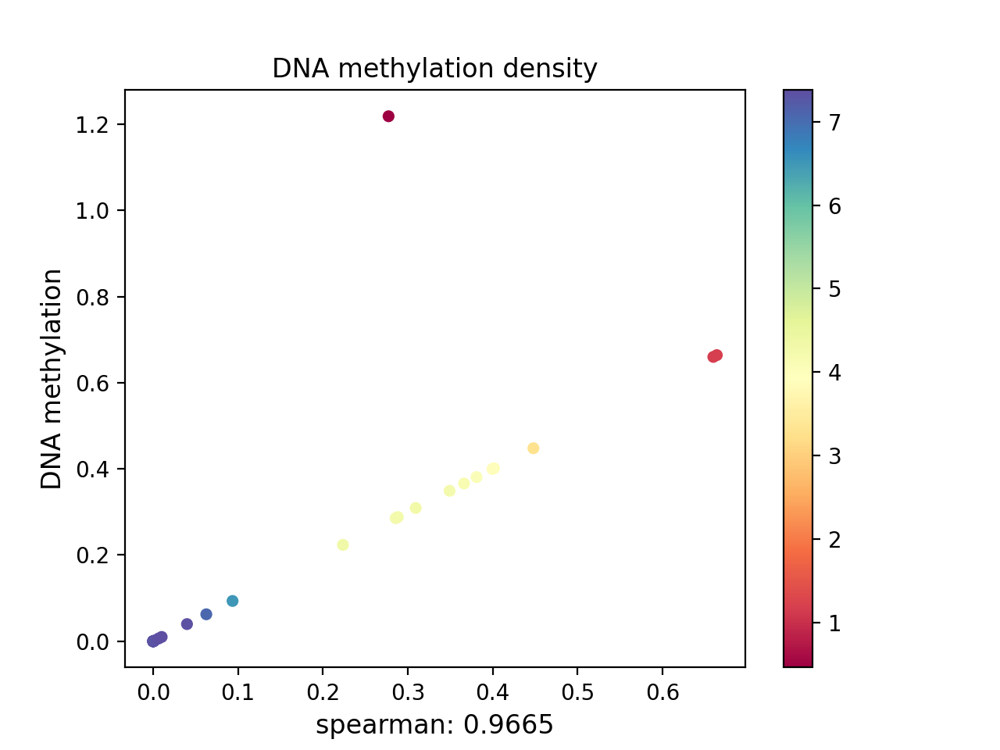
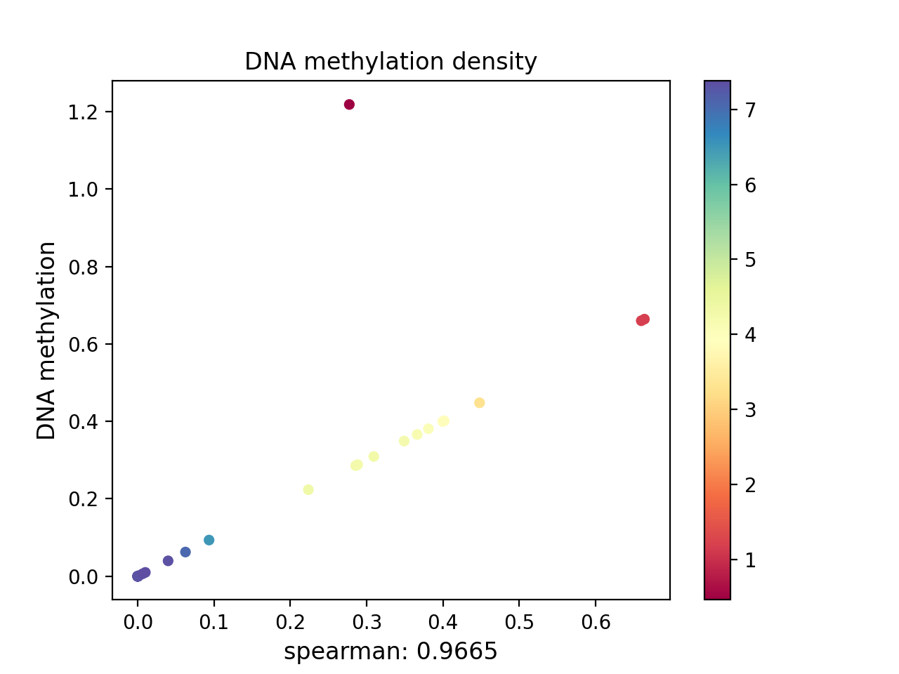

PlotMeth¶
BatMeth2: An Integrated Package for Bisulfite DNA Methylation Data Analysis with Indel-sensitive Mapping.
python library¶
install library required
pip install numpy
pip install pandas
pip install matplotlib
pip install seaborn
bt2profile¶
Plot DNA methlation profile across gene/ TE/ predefined bed region, such as peak or dmr region. The input DNA methylation level matrix is produced by Calulate mC across predefined regions.
The *.TSSprofile.txt *.centerprofile.txt and *.AverMethylevel.txt are calulated by Calulate mC across predefined regions.
$ BatMeth2 methyGff -o H3K4me3.bdgene H3K4me3.unbdgene \
-G genome.fa -m methratio.txt \
-b H3K4me3.bdgene.bed H3K4me3.unbdgene.bed -B
$ bt2profile.py -f H3K4me3.bdgene.TSSprofile.txt \
H3K4me3.unbdgene.TSSprofile.txt \
-l H3K4me3.bdgene H3K4me3.unbdgene \
--outFileName H3K4me3.output.meth.pdf \
-s 1 1 -xl up2k TSS down2k --context C

$ BatMeth2 methyGff -o active random \
-G genome.fa -m methratio.txt \
-b active.bed random.bed -B
$ bt2profile.py -f active.centerprofile.txt \
random.centerprofile.txt \
-l active random \
--outFileName active_random.output.meth.pdf \
-s 1 1 -xl up2k center down2k

$ bt2profile.py -f H3K27me3.bdgene.AverMethylevel.txt \
H3K27me3.unbdgene.AverMethylevel.txt \
-l H3K27me3.bdgene H3K27me3.unbdgene \
--outFileName H3K27me3.output.meth.pdf \
-s 1 1 1 -xl up2k TSS TES down2k
{kind=link}
bt2heatmap¶
$ python bt2heatmap.py -m H3K4me3.bdgene.GENE.cg.txt -l bg \
-o test0.pdf -z k43 -sl TSS -el TTS
{kind=link}
$ python bt2heatmap.py -m H3K4me3.bdgene.TSS.cg.txt H3K4me3.bdgene.TTS.cg.txt \
-l tss tts -o test.pdf --zMax 0.1 --colorMap vlag --centerlabel center -z bd
{kind=link}
$ python bt2heatmap.py -m H3K4me3.bdgene.TSS.cg.txt H3K4me3.bdgene.TTS.cg.txt \
H3K4me3.unbdgene.TSS.cg.txt H3K4me3.unbdgene.TTS.cg.txt \
-l test end -o test2.pdf --zMax 0.05 --centerlabel center \
--plotmatrix 2x2 --colorList white,red -z bd unbd
{kind=link}
$ python bt2heatmap.py -f H3K4me3.bdgene.body.cg.txt H3K4me3.bdgene.body.cg.txt \
H3K4me3.unbdgene.body.cg.txt H3K4me3.unbdgene.body.cg.txt \
-l test end -o test3.pdf --zMax 0.5 --centerlabel center \
--plotmatrix 2x2 -z bd unbd
{kind=link}
$ python bt2heatmap.py -m H3K4me3.bdgene.TSS.cg.txt H3K4me3.bdgene.TTS.cg.txt \
H3K4me3.bdgene.TSS.chg.txt H3K4me3.bdgene.TTS.chg.txt \
H3K4me3.bdgene.TSS.chh.txt H3K4me3.bdgene.TTS.chh.txt \
-l H3K4me3.bdgene-tss H3K4me3.bdgene-tts \
-o H3K4me3.bdgene.TSS_TTS.heatmap.pdf --plotmatrix 3x2 \
--centerlabel center -z cg chg chh --zMax 0.3 1 0.01
{kind=link}
bt2basicplot¶
$ python3 bt2basicplot.py -c coverfile.txt coverfile2.txt -o tt.pdf
{kind=link}
$ python3 bt2basicplot.py -f prefix1.gene.cg.txt prefix2.gene.cg.txt \
-c coverfile.txt coverfile2.txt -o tt.pdf
{kind=link}
 

{kind=link}
Tip
DNA methylation level distribution on chromosome (bt2chrplot) and DNA methylation level distribution (bt2visul) are currently being tested, and we will update them as soon as possible.
Note: @HZAU.
Tip
For feature requests or bug reports please open an issue on github.